One chain: weather goes in, litres of protectant per hectare come out
Abiotic stress (heat, soil salinity, and vapor pressure deficit) reduces crop yields across Taiwan's farmland long before visible damage appears, by disrupting plant hormone balance and protein stability at the cellular level. ReLeaf addresses this by deploying an optogenetically controlled B. subtilis bioreactor that senses field stress in real time and produces tailored protectant proteins. Our mathematical model asks the question that connects every part of that system: given today's stress conditions in a Taiwanese farm field, how much engineered protectant actually reaches the plant?
AsksHow much is this field losing, and how much of that can ACC deaminase reach?
TakesWeather by growth stage
GivesStress index S, addressable share Saddr, demand f
Standing onOurs 25 years of county harvests
2 Optogenetic kineticsAsksWhat lamp setting does that demand mean, how fast does the reactor answer, and how much enzyme comes out?
TakesDemand f
GivesLamp PPFD, response horizon, activity in mU mL−1 and g ACC L−1 day−1
Standing onOurs DNPH assay, Literature CcaSR transfer function
3 Dose and paybackAsksHow many litres does one hectare need, how often, and is it worth making?
TakesActivity per litre, release dekads, efficacy ε
GivesLitres per hectare per application, applications per season, fleet lead time, NT$ per hectare per year
Standing onOurs the dose that worked on plants, Ours DNPH titre
![Three panels under the title From Environmental Stress to Targeted Foliar AccD Delivery. Block 1, environment to stress prediction, shows a sensor in a field with temperature, conductivity and vapour pressure deficit, and a stage-weighted anomaly model. Block 2, engineered cell to AccD production, shows a reactor under green and red light with the CcaS and CcaR proteins and a Hill light response. Block 3, concentration to foliar delivery, shows the reactor feeding a bottle and a sprayer onto a leaf, with the delivered-dose equations. A strip at the bottom runs weather to anomaly to PPFD to AccD activity to spray volume to delivered dose.](../assets/img/model/three-blocks-overview.webp)
Block 1 · Stress index
Taiwan’s own harvests decide what a stressed season costs.
Our bioreactor makes a crop protectant only when its green lamp is on. So the whole system depends on one number: how stressed is the crop right now?
Most crop stress indices add temperature, water and light with weights chosen by experts, and are rarely checked against what happened in the field. We took a different route: let Taiwan's own harvests decide. The Agriculture and Food Agency (農粮署) has published county rice yields for every season since 2001. A season whose yield fell below its trend was a stressed season. If weather alone can predict which seasons fall, and by how much, that prediction is a stress index, and every harvest becomes a test of it.

Assumptions
| # | Assumption | Why? |
|---|---|---|
| 1 | A county's yield trend reflects technology and management; the deviation from it reflects weather. | Varieties and practices change slowly; weather changes every season. |
| 2 | The same weather stress causes more damage at some growth stages than others. | Rice sensitivity is stage-specific (e.g. cold at heading, rain at tillering). |
| 3 | Stress can only reduce yield, and only after it passes a threshold. | Physical damage is one-sided: a calm day does not add rice. |
| 4 | The two rice crops respond differently to weather and should be modeled separately. | Different seasons, weather and stresses. |
| 5 | The value of lost rice can be estimated using the current farm-gate price. | Official daily price exists; public purchase price is close. |
Methods
Result 1 · Light, wind and badly timed water cost rice; heat earns nothing
We gathered 18 candidate stresses. For each crop, every one of the 215 − 1 = 32,767 combinations of 15 candidates was fitted and scored on years it had not seen. Each candidate was then judged three ways.
![Two horizontal bar charts, second crop on the left and first crop on the right, ranking fifteen candidate weather stresses by the mean change in prediction error when the variable is added. For the second crop, rain by five stages and typhoon wind are furthest to the left and green; for the first crop, sunshine potential, dark spell and light deficit lead. Grey bars are dropped variables, and minimum and maximum temperature by stage sit at the bottom of the first crop with bars to the right, meaning they hurt.](../assets/img/model/stress-variable-leaderboard.webp)
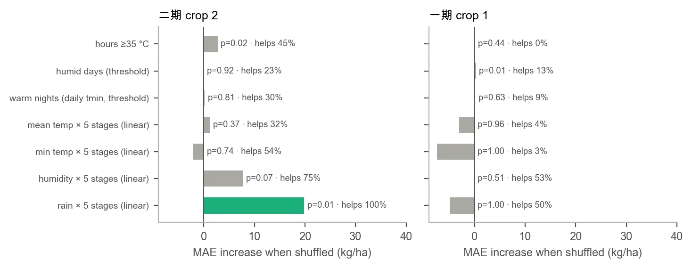
Which stresses were supported by the data. After testing each candidate stress with three different methods, these were the variables that consistently improved the model and were kept in the final version.
| Crop | Kept | Dropped despite being proposed |
|---|---|---|
| Second (二期) | Rain by growth stage, typhoon wind, light deficit, sunshine potential, heavy-rain days ≥ 150 mm, lodging gusts, cold hours at heading | Humidity, minimum and mean temperature by stage, warm nights, hours ≥ 35 °C |
| First (一期) | Sunshine potential, dark spell, light deficit, humidity by growth stage, humid days, warm nights, hours ≥ 35 °C | Wet-day runs, early storm rain, seedling cold, heavy-rain days, rain by stage, mean and minimum temperature by stage |
Result 2 · One equation per crop, and what its index is worth in dollars
One equation predicts county yields, and its damage half is the stress index. Each index value has a price in kilograms and New Taiwan dollars.
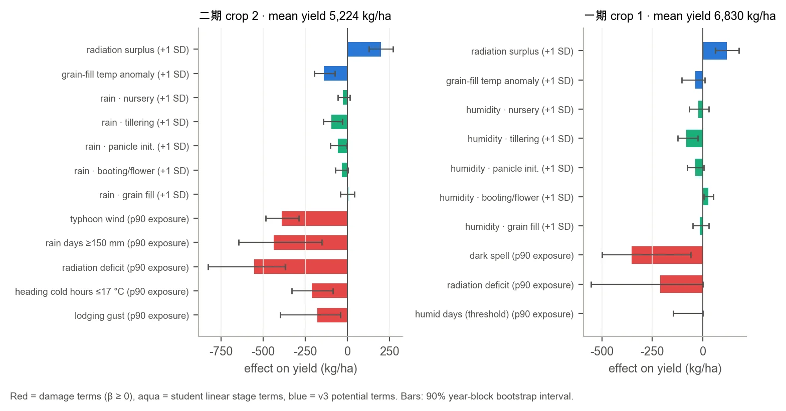

What one index point has historically cost, in rice and in New Taiwan dollars
The stress index S is the damage side of the model (Methods, eq. 2). Its meaning comes from history: for every county-season since 2001 we know its index (computed without that year) and the real harvest. Grouping seasons by index gives the typical outcome at each level.

| First-crop index | Band | Typical vs normal year | kg/ha | NT$/ha | Chance of losing > 5% |
|---|---|---|---|---|---|
| 0.05 | none | +5.7% | +422 | +10,858 | 2% |
| 0.10 | none | +1.5% | +109 | +2,802 | 12% |
| 0.15 | mild | +0.0% | +1 | +17 | 25% |
| 0.20 | mild | −1.8% | −129 | −3,311 | 35% |
| 0.25 | mild | −1.8% | −129 | −3,311 | 25% |
| 0.30 | mild | −3.4% | −252 | −6,487 | 32% |
| 0.35 | moderate | −4.0% | −293 | −7,539 | 45% |
At the recent typical first-crop trend yield (7,354 kg/ha) and the official 2026 farm-gate price (NT$25.7/kg). Second crop: a normal year sits near 0.33; −5% at 0.5, −9% at 0.6, −15% at 0.8. The same number means different things in the two crops, so the index is always reported with its crop.
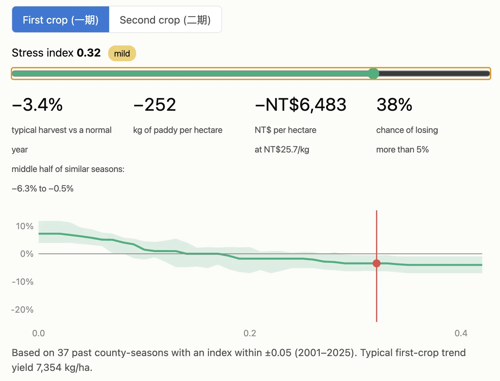
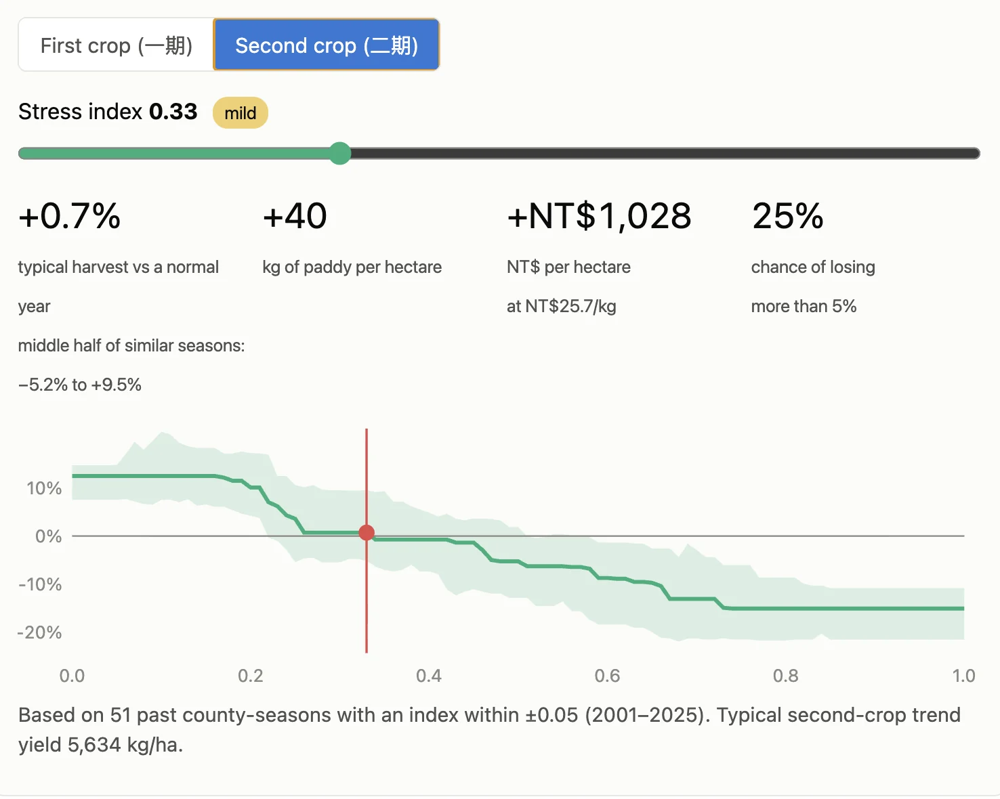
How much of that loss ACC deaminase can reach: the coefficient our wet lab sets
Efficacy is the share of the yield a stress costs that ACC deaminase could save: 1 means all of it, 0 means none. The values in Figure 11 come from the literature. Our wet lab measured the first one directly, for salinity, in Arabidopsis (experiment #9: buffer or ACCD given one day before, together with, or one day after 0, 75 or 100 mM NaCl; 15 days on agar). We then carried the result to rice grain yield with published rice studies.
| Arabidopsis, 75 mM NaCl | Fresh weight (g) | Change under salt (vs same treatment, 0 mM) | vs buffer at 75 mM |
|---|---|---|---|
| Buffer (control) | 0.064 | −51% | — |
| ACCD before salt | 0.164 | +35% | +158% |
| ACCD with salt | 0.144 | −34% | +127% |
| ACCD after salt | 0.141 | +42% | +122% |

Result 3 · It beats the no-weather trend on years it never saw
Every test asks the same question, how far off is the predicted county yield, but closes a different loophole. The reference is the trend: each county's yield trend with no weather at all, the "no skill" line any weather model must beat.
![Island mean first-crop paddy yield from 2001 to 2026 in black, rising from 5,850 to about 7,350 kilograms per hectare with large year to year swings. A green model line and a dotted grey trend line, both predicted from earlier years only, follow it from 2008. Below, a bar chart of island error per cent shows the green model bars shorter than the grey trend bars in the bad years 2013, 2018 and 2022. A 2026 forecast of 7,644 kilograms per hectare frozen on 26 September is marked at the right with an error bar.](../assets/img/model/stress-validation-island.webp)
![Left: frozen forecast against official 2026 first-crop yield for four counties, with eighty per cent intervals, scattered around the one to one line; Taichung and Pingtung sit on it, Taitung and Hualien off it; the overall error is 533 kilograms per hectare or 7.9 per cent. Right: yield versus trend against the 2026 first-crop stress index, with the historical typical-outcome line and band, and the four counties as red triangles; Taichung falls on the line, Taitung below it and Hualien and Pingtung far above.](../assets/img/model/stress-blind-2026.webp)
Conclusion
Light shortage, typhoon wind and lodging, and water (heavy rain, rain at tilling). Heat and warm nights barely register.
One equation per crop; its damage half is the stress index. First crop: 0.15 is a normal year, 0.35 has meant ≈ −4%, −290 kg/ha, −NT$7,500/ha.
Yes: 32% less error than the trend (second crop), 8% (first crop), under the strictest test; most of the gain is in bad seasons. A real blind test (2026) is under way: 4 of 16 counties published, county error 7.9% (trend 8.8%).
Block 2 · Optogenetic kinetics
One litre of culture clears a gram of ACC a day.
The reactor holds Bacillus subtilis WB800 carrying the cyanobacterial CcaSR two-component system. Green light at 535 nm activates the sensor kinase CcaS, which phosphorylates CcaR. CcaR~P activates the PcpcG2 promoter, transcribing acdS fused to a secretion signal peptide. The Sec translocon exports the enzyme and cleaves the signal peptide, leaving active ACC deaminase in the culture supernatant.
![A schematic of a Bacillus subtilis WB800 cell. Green 535 nanometre light drives the membrane sensor CcaS, which carries a phycocyanobilin chromophore needing ho1 and pcyA; red 672 nanometre light reverses it. CcaS phosphorylates CcaR, and CcaR~P activates the P_cpcG2 promoter driving a signal peptide fused to acdS. The ribosome makes pre-ACCD, the Sec translocon exports it and cleaves the signal peptide, leaving active ACC deaminase outside. A line at the bottom reads measured at this point: samyQ 7.25, csn 3.31 below detection, WB800 host zero.](../assets/img/model/ccasr-secretion-pathway.webp)
Assumptions
| # | Assumption | Basis |
|---|---|---|
| B1 | The construct supplies phycocyanobilin. | CcaS is a bilin-binding photoreceptor. B. subtilis does not synthesise PCB, so Castillo-Hair co-expressed ho1 and pcyA alongside the sensor. |
| B2 | The CcaSR transfer function measured on a fluorescent reporter also describes acdS transcription. | Same promoter, same sensor, same host. |
| B3 | Activity in the supernatant is proportional to correctly folded, secreted enzyme. | The assay measures α-ketobutyrate, produced 1:1 with ACC cleaved, so it reports catalytic activity rather than protein mass. |
Result 1 · Useful control runs from demand 0.015 to 0.94, and the lamp sets both ends
The measured transfer function. Castillo-Hair et al. (2019) characterised CcaSR in B. subtilis and fitted the steady-state response to a Hill function with half-maximal intensity K½ = 4.66 ± 0.63 µmol m−2 s−1 and Hill coefficient n = 1.88 ± 0.16, over a dynamic range exceeding 70-fold. The same system in E. coli gives K½ = 1.075 and n = 2.737, so the parameters are host-specific and the B. subtilis values are the correct ones here.
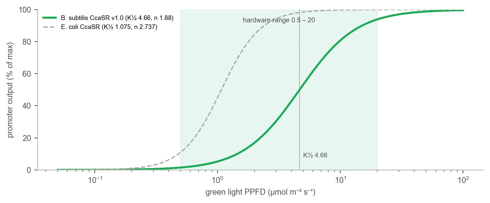
Inversion. Block 1 produces addressable stress Saddr and converts it to a demand f between 0 and 1. The lamp setpoint is the light intensity that drives promoter output to that fraction of maximum:
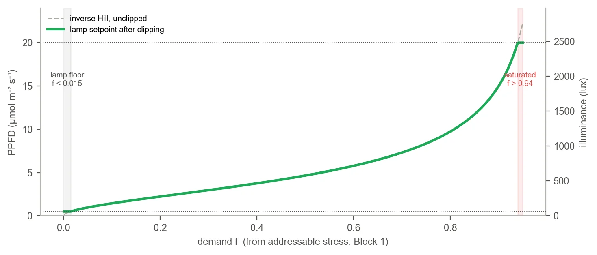
| Demand | PPFD (µmol m−2 s−1) | Illuminance (lux) |
|---|---|---|
| 0.05 | 0.97 | 121 |
| 0.1 | 1.45 | 180 |
| 0.25 | 2.6 | 322 |
| 0.5 | 4.66 | 578 |
| 0.75 | 8.36 | 1,037 |
| 0.9 | 15.00 | 1,859 |
The lux conversion uses photon energy at 526 nm (3.78 × 10−19 J, or 0.228 J µmol−1) and the photopic luminous efficacy at that wavelength (683 × 0.80 = 546 lm W−1), giving 124 lux per µmol m−2 s−1. Both quantities are per unit area, so no area term enters. The ceiling saturates the promoter at f = 0.94, so demands above that are indistinguishable to the reactor.
Result 2 · Seven hours from decision to protection, so the controller must run on forecast
![Four panels. Top left, output rising to half of final 105 minutes after the lamp goes on. Top right, output falling to half 75 minutes after it goes off. Bottom left, a stacked bar of the 7.3 hour horizon: 1.8 hours transcription lag, 2 hours accumulation, 0.5 hours harvest and load, a sliver for spraying, and 3 hours stomatal uptake. Bottom right, dose time against demand under three assumptions: flat at two hours if required mass scales with demand, rising linearly if it scales with the square, and falling steeply if the required mass is fixed.](../assets/img/model/ccasr-response-kinetics.webp)
| Step | Hours | Source |
|---|---|---|
| Transcription lag (to half-max) | 1.8 | CcaSR reporter kinetics Literature |
| Accumulate required amount | 2 | Assumed placeholder |
| Harvest, concentrate, load | 0.5 | Block 3 Design |
| Spray | 0.1 | Knapsack application Design |
| Stomatal uptake into apoplast | 3 | Surfactant-assisted uptake Literature |
| Total H | 7.3 | Reactor alone would be 4.2 h |
Result 3 · Secretion detected at 7.25 mU mL−1, not yet quantified
Measured activity. ACC deaminase activity was measured by DNPH colorimetry on culture supernatant. The enzyme converts ACC to α-ketobutyrate and ammonia in 1:1 stoichiometry, so α-ketobutyrate production equals ACC cleaved. Reaction conditions were 43.0 mM ACC, pH 8.0, 30 °C, 30 min, with the WB800 host supernatant as blank.
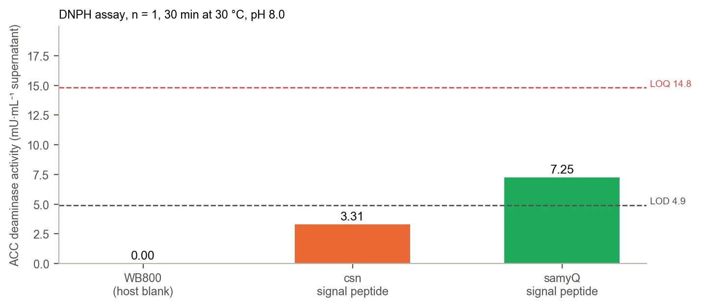
| Construct | A540 | OD600 | Activity (mU mL−1) | Per OD600 | Status |
|---|---|---|---|---|---|
| WB800 host | 0.388 | 3.322 | 0 | — | Blank by definition |
| csn | 0.404 | 2.638 | 3.31 | 1.25 | Below LOD |
| samyQ | 0.423 | 3.058 | 7.25 | 2.37 | Detected, below LOQ |
Signal is not a biomass artefact. WB800 has the highest OD600 and the second-highest absorbance; samyQ has lower biomass and higher signal. A background from cell density or secreted carbonyl metabolites would produce matching ranks. This argument is independent of the standard curve and survives any calibration error.
Calibration correction. The standard-curve concentrations were originally computed against a 110 µL reaction volume while the actual standard volume was 160.6 µL. Correcting this reduces every derived activity by a factor of 1.460.
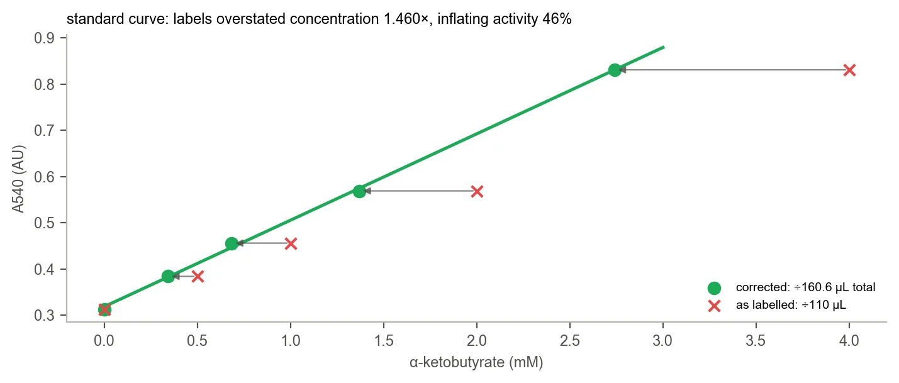
Implied enzyme concentration. Substrate was 43.0 mM against a Km of 3.4 mM, so the assay ran at 93% of Vmax. Correcting to Vmax = 7.82 mU mL−1 and applying kcat = 146 min−1 (P. putida UW4) gives a secreted enzyme concentration of 54 nM, or 1.96 mg L−1.
Accumulation. Enzyme accumulates while the lamp runs and decays in the medium, so banked activity saturates at production rate × mean lifetime. Running the reactor longer past that point adds nothing.
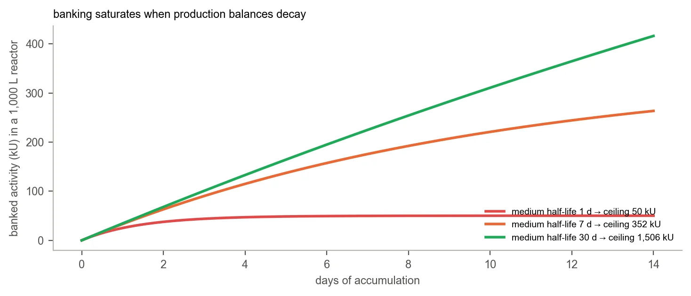
Culture reached OD600 3.06. At a doubling time of 29 min in LB at 37 °C, that is about 5.9 doublings from a 1:100 inoculum, or 4 to 6 h including the approach to stationary phase. Batch duration was not recorded, so the production rate is inferred rather than measured.
Conclusion
Control is useful between f = 0.015 and 0.94.
105 min to half-maximal transcription, about 7.3 h from decision to enzyme active in the leaf. Uptake is 41% of that. The controller must act on forecast stress.
7.25 mU mL−1 with the samyQ signal peptide, equivalent to 1.96 mg L−1, below the published range for B. subtilis secretion. In the unit the farm question needs: one litre of supernatant clears 44.0 mg of ACC per hour, or 1.056 g per day.
Key findings
- Signal peptide selection. samyQ gives detectable secretion; csn does not. The comparison is the basis for carrying samyQ forward.
- Controller bounds. The lamp ceiling saturates the promoter at f = 0.94, defining the upper limit of useful control.
- Forecast requirement. A 7.3 h decision-to-protection time makes reactive control structurally late, which is why Block 1 supplies a forward index.
- Titre as the bottleneck. The measured 1.96 mg L−1 is below the published range and propagates directly into the Block 3 dose budget.
Block 3 · Dose and payback
How much protectant, and how many reactors?
Blocks 1 and 2 end in units nobody farms with: a stress index, and a titre in mU mL−1. This block turns them into litres, machines and New Taiwan dollars for waterlogging in the second rice crop, which is the stress Block 1 can actually count and the one this enzyme acts on most strongly.
![Four boxes under the title the whole calculation. One plate, 1.67 millilitres over 100 square centimetres, measured. One hectare, 1,670 litres of neat culture, arithmetic. A rice canopy, 4,008 litres for one application, modelled. In the tank, 400 litres of water plus concentrate, what the farmer handles. Arrows between them read times ten to the eighth divided by 100, times 2.4, and divided by 10 concentrate. A note says only the first box is measured on a plant, the third carries a band of 2,806 to 5,878 litres, and the third box multiplies by the field area in hectares.](../assets/img/model/dose-chain-plate-to-tank.webp)
Result 1 · How much protectant is needed?
This is the most important result. Everything that leads to the calculation in Result 1 is set out in Result 2.
Nothing in the science changes with field size. Every figure here is the same per-hectare rate multiplied by area. A farmer with 1 分 and a farmer with 10 公頁 face the identical calculation. Only two things fail to scale cleanly: reactor units round up to whole machines, and whether a season fires at all is set by the weather, not by how much land you have.
| Land size | One application | A season that fires (9 passes) | Worst on record (17 passes) |
|---|---|---|---|
| 1 分 (0.097 ha) | 389 L | 3,499 L | 6,609 L |
| 5 分 (0.485 ha) | 1,944 L | 17,493 L | 33,043 L |
| 1 甲 (0.970 ha) | 3,887 L | 34,986 L | 66,085 L |
| 1 公頁 (1.000 ha) | 4,008 L | 36,072 L | 68,136 L |
| 3 公頁 (3.000 ha) | 12,024 L | 108,216 L | 204,408 L |
| 10 公頁 (10.000 ha) | 40,080 L | 360,720 L | 681,360 L |
Litres of neat culture. One application is diluted into 400 L of tank mix per hectare.
Amount of protectant, by land size and stress level
Two inputs. Field size sets the litres per application, and the stress level sets how many applications the season needs. The stress bar is not a made-up scale: its four stops are the only four outcomes that occur in 25 years of 雲林 record, with how often each one happened.

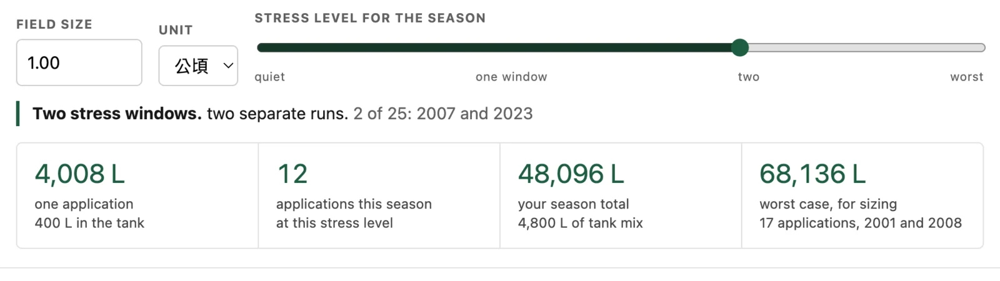
Result 2 · Where those numbers come from
Three things to justify: the dose we measured, the correction we modelled, and how often a field needs it. Then one question that could undo all three.
The dose, and why it is a ceiling rather than a requirement
Experiment #9 sprayed 1.67 mL of filtered supernatant onto a plate of seven-day-old Arabidopsis. A recorded volume over a known area is a rate, and a rate scales to a hectare without any modelling in between.
| Quantity | Value | Status |
|---|---|---|
| Volume applied | 1.67 mL | From the protocol Measured |
| Plate area | 100 cm2 | Reconstructed, never written down Assumed |
| Rate per hectare | 1,670 L | Arithmetic |
| Our measured titre | 7.2514 mU mL−1 | Above LOD, below LOQ Measured |
| Activity delivered | 12.1 kU ha−1 | Arithmetic |
The experiment changed salt level and timing, but not the amount. So 1,670 L/ha is a dose that worked, not the smallest dose that works, and the true minimum sits somewhere at or below it. One plate with neat, 1:3, 1:10 and 1:30 arms would find it, and every litre on this page would move with the answer.
The canopy correction, the one modelled step
A seedling plate and a rice canopy are not the same target. Rice carries far more leaf, so it catches much more of the spray, and then shares it over much more surface. Those two effects pull in opposite directions, and the second wins.
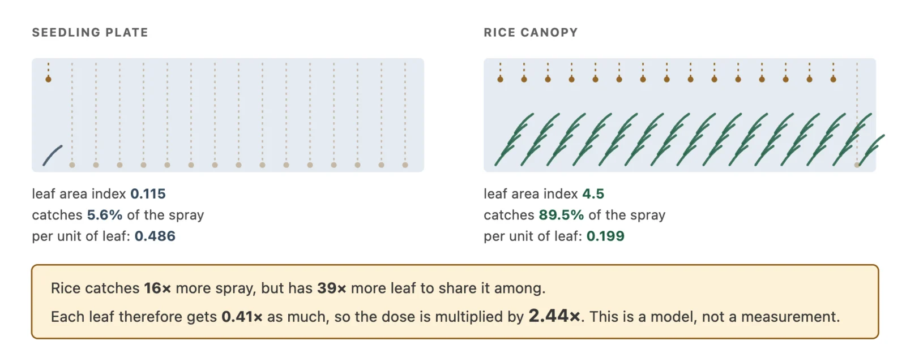
How often a field actually needs treating
Block 1 rebuilt its stress index dekad by dekad for every 雲林縣 second crop (二期) from 2001 to 2025. A dekad (a 10-day period) qualifies for release when the share of stress this enzyme can act on, here waterlogging, reaches 1% expected loss on its own.
| Basis | Applications | Culture, L/ha | What it is for |
|---|---|---|---|
| Averaged over all 25 seasons | 3.28 | 13,146 | Budgeting only. No season ever looks like this |
| A median season that fires | 9 | 36,072 | The realistic planning case |
| 90th percentile | 12 | 48,096 | A defensible basis for sizing capacity |
| Worst on record, 2001 and 2008 | 17 | 68,136 | What the hardware has to survive |
Enzyme entering the leaf
This does not enter the arithmetic, because whatever uptake happened on the plate is already inside the 1,670 L. It matters for a different reason. If an intact enzyme cannot cross into a rice leaf, then no amount of volume fixes it, and the canopy correction is correcting the wrong thing.
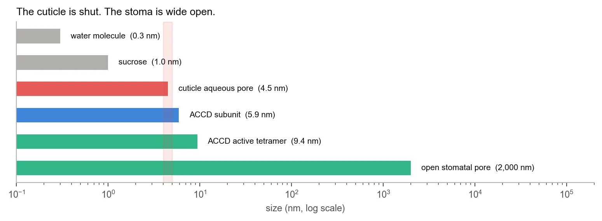
Rice is amphistomatous: stomata on both leaf surfaces, upper density comparable to or slightly above the lower. Most crops keep theirs on the underside, where a spray never lands. For us that helps, because droplets settle on a surface that actually has the pores.
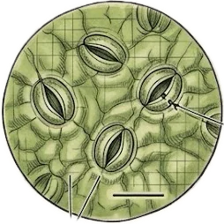
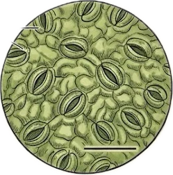
Result 3 · Can we make it, and is it worth it
On-time delivery
Block 2 gives the reactor a production rate of 34,807 mU per reactor-litre per day at our titre, which is 0.2083 reactor-litre-days for every litre of culture. Lead time for one application is then the culture volume divided by total vessel volume, plus the 7.3 h forecast lag.
| Fleet, 20 L vessels | Total volume | Lead time for 1 ha | Lead time for 3 ha | Verdict |
|---|---|---|---|---|
| 2 units | 40 L | 21.2 d | 62.9 d | Too slow to chase a forecast |
| 5 units | 100 L | 8.7 d | 25.4 d | Too slow to chase a forecast |
| 10 units | 200 L | 4.5 d | 12.8 d | Only works with stock on hand |
| 20 units | 400 L | 2.4 d | 6.6 d | Only works with stock on hand |
The useful weather forecast runs about 3 days ahead. Producing a single hectare-application takes 4.5 days on a 10-unit fleet, and the worst recorded window in 2008 needed 16.4 days of lead against that 3-day forecast. The reactor cannot chase the weather. It runs continuously through the season and builds stock; the forecast decides when to spend the stock, not when to start brewing. Storage stability is therefore load bearing, and it is unmeasured.
Payback, and the answer nobody wants
At the official 2026 farm-gate price, a hectare of ordinary 雲林 paddy carries NT$4,429 per crop of weather-attributable loss that this enzyme could address. Block 3 also finds the first crop never crosses the release threshold in 25 years, so only one crop a year benefits. With 10 units at NT$30,000 each, payback is 64.7 years. Pushing efficacy to the physical ceiling of 1.0 still leaves 38.3 years. A 5-year payback would need an efficacy of 12.8, which is not a hard target, it is an impossible one.
| Land | Efficacy | Units | NT$/unit | Benefit/yr | Payback |
|---|---|---|---|---|---|
| Ordinary paddy | 0.28 | 10 | 30,000 | 4,635 | 64.7 y |
| Ordinary paddy | 1.00 | 10 | 30,000 | 7,824 | 38.3 y |
| Ordinary paddy | 1.00 | 10 | 3,000 | 7,824 | 3.8 y |
| Salt-affected | 0.28 | 10 | 30,000 | 126,967 | 2.4 y |
| Salt-affected | 0.28 | 50 | 30,000 | 126,967 | 11.8 y |
| Salt-affected | 1.00 | 10 | 30,000 | 444,724 | 0.7 y |
Limitations
Three experiments could change our estimates substantially: measuring how long the enzyme lasts on leaves, finding the minimum effective dose, and measuring spray capture on rice canopies.
There is also a mismatch we haven't solved. Our spray schedule is based on waterlogging, but our strongest economic case is for salt-affected land. Salinity persists differently, so we need a new application schedule before these two parts of the model can work together.
Conclusion
Block 1 ends with a stress index fitted to 25 years of county harvests: 32% less county error than the no-weather trend in the second crop, and a price on every index level, about 4% of yield or NT$7,539/ha at a moderate first-crop season. Block 2 ends at the reactor outlet: useful lamp control between demand 0.015 and 0.94, 7.3 h from decision to enzyme in the leaf, and 7.25 mU mL−1 of secreted activity, above detection and below quantitation. Block 3 turns both into the number a farmer would act on.
We started with a simple question: how much protectant would a rice farmer need for their field? Our current estimate is 4,008 L of culture per hectare per application, diluted into 400 L of spray mix. Getting to this number forced us to reconsider not just the dose, but how ReLeaf would actually work in the field.
A 10-unit reactor fleet needs 4.5 days to produce one hectare's application, longer than our three-day forecast window. We would need to produce and store culture in advance. Our weather analysis also showed that one stress window can require multiple sprays, with the number depending on how long the enzyme remains effective on leaves. Both storage stability and spray lifetime remain untested.
Our Arabidopsis results already reach the ceiling of our efficacy calculation. More experiments under similar conditions won't answer the question that matters: whether ReLeaf works on rice. Our next step is to test rice in soil, measuring fresh weight, root length and applied volume, while finding the minimum effective dose and measuring spray capture on rice leaves.
Our model estimates a 64.7-year payback on ordinary paddy, compared with 2.4 years on salt-affected coastal land. These are projections, but the difference changes where ReLeaf might be useful. There is still a major gap: our spray schedule is based on waterlogging, while our strongest economic case is salinity. Before we can make a credible recommendation to farmers, we need to rebuild the application schedule around salt-sensitive growth stages.
We began by trying to calculate how much protectant a farmer would need. We ended up discovering how much we still need to learn before that number can be used in a real field. For us, that is the purpose of the model: not just to produce an estimate, but to show exactly what needs to be tested before ReLeaf can move beyond the lab.
References
Block 1 · Stress index
- Agriculture and Food Agency, Ministry of Agriculture (農粮署). County rice yield statistics, every season from 2001. The record the stress index is fitted and tested against, and the source of the realised 2026 first-crop yields.
- ERA5 daily reanalysis for the historical fit, and Central Weather Administration (中央氣象署) station data for live use. The weather inputs behind every stress term.
- Official 2026 farm-gate paddy price, NT$25.7/kg, used for every NT$ figure on this page.
- Grattan, S.R. et al. (2002) rice salt-tolerance yield response, the black line in Figure 10, with the older Maas–Hoffman guideline shown for comparison.
- Shultana, R. et al. (2020), the 8 dS/m reference point marked on Figure 10.
- Our wet lab: Arabidopsis salinity experiment #9, buffer or ACCD at three timings against 0, 75 and 100 mM NaCl, 15 days on agar.
Block 2 · Optogenetic kinetics
- Castillo-Hair, S.M., Baerman, E.A., Fujita, M., Igoshin, O.A., Tabor, J.J. (2019) Optogenetic control of Bacillus subtilis gene expression. Nature Communications 10:3099. doi:10.1038/s41467-019-10906-6. Source of K½ = 4.66 ± 0.63 and n = 1.88 ± 0.16, of the ho1 and pcyA requirement, and of the response kinetics in Figure 16.
- ACC deaminase kinetics: Pseudomonas putida UW4, Km 3.4 mM, kcat 146 min−1.
- ACC deaminase quaternary structure: homotetramer, ~144 kDa, 36.5 kDa per subunit.
- B. subtilis heterologous secretion yields, 4 mg L−1 to 200 mg L−1.
- B. subtilis doubling time 28–30 min in LB at 37 °C.
- Our wet lab: DNPH ACC deaminase activity assay, 2026-10-07, FlexA A540 readings, n = 1.
Block 3 · Dose and payback
- Our wet lab: Arabidopsis salinity experiment #9, phase 3 application protocol, three sprays from a sterilised nozzle at 10 cm, calibrated at 1.67 mL per three sprays in the companion heat protocol. Recorded on Plants. The source of the applied volume behind 1,670 L/ha.
- Our wet lab: DNPH ACC deaminase activity assay, 2026-10-07, 7.2514 mU mL−1 supernatant, above the limit of detection and below the limit of quantitation. Every litre figure scales with it.
- Block 1 rebuilt dekad by dekad for every 雲林縣 second crop (二期), 2001 to 2025, from Agriculture and Food Agency yields and ERA5 daily weather. The source of the release count, of the 17 quiet seasons out of 25, and of the 2001 and 2008 worst case.
- Rice leaf area index 4.5 at panicle initiation against 0.115 on a seedling plate, and the spray-capture fraction at each. The canopy correction of 2.44× is modelled from these, not measured.
- Cuticular aqueous pores 4 to 5 nm, against the 9.4 nm active tetramer; organosilicone surfactants drive stomatal mass flow (Knoche 1994). Behind Figure 24.
- Rice stomatal density: IR64, 186.7 mm−2 adaxial and 621.0 mm−2 abaxial. Figures 25 and 26.
- ACC deaminase quaternary structure: homotetramer, about 144 kDa, 36.5 kDa per subunit, giving the 9.4 nm hydrodynamic size.
- Geospatial Analysis: capital cost NT$30,000 per unit, unit density by soil type, and the salt-affected profit figures behind the 2.4-year payback.
- Official 2026 farm-gate paddy price, NT$25.7/kg, behind the NT$4,429 per crop of addressable loss on ordinary 雲林 paddy.